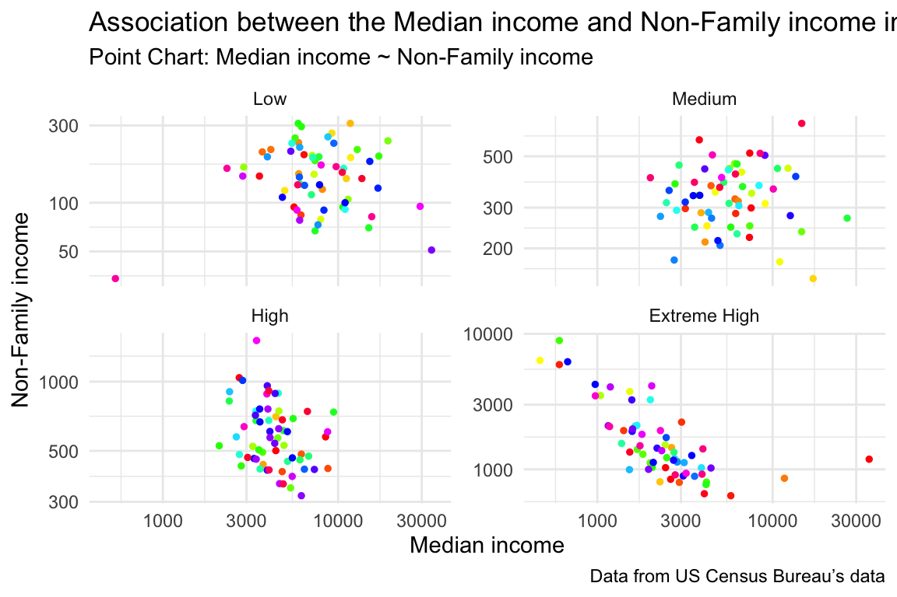
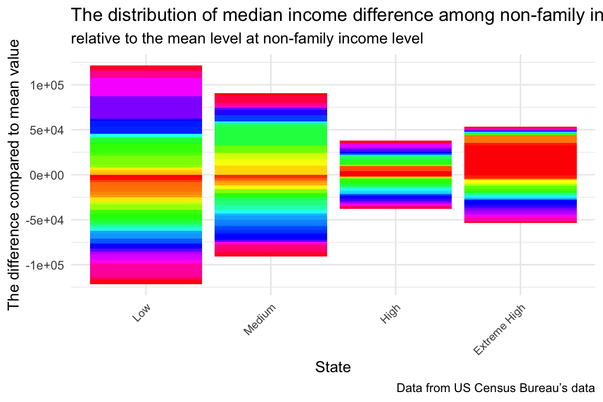
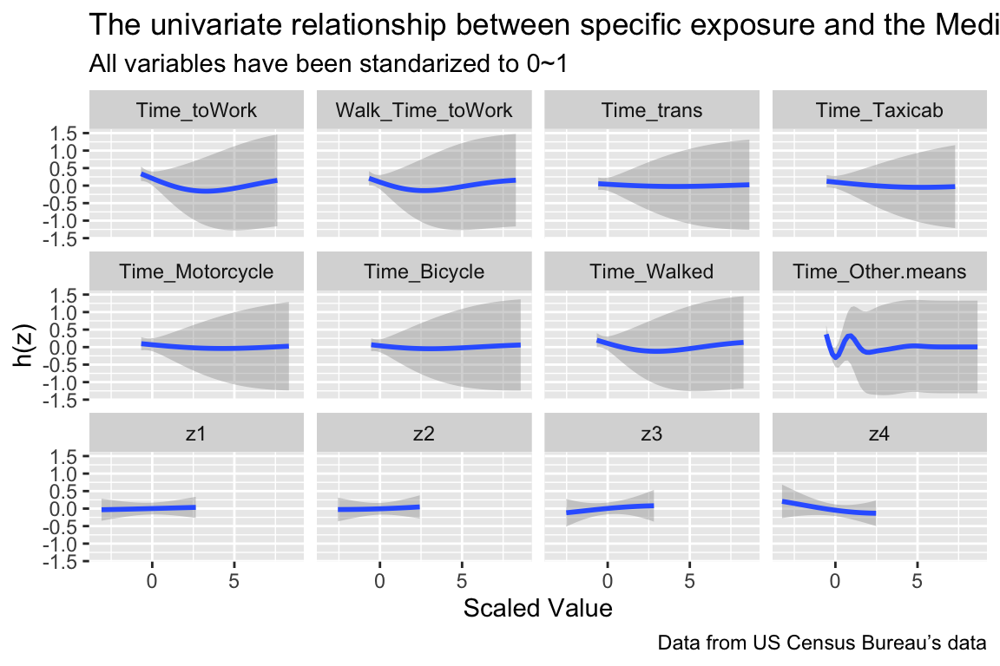

if (!require("tidycensus", quietly = TRUE)) {
install.packages("tidycensus", repos = "http://cran.us.r-project.org")
}Part2: using APIs and making data visualizations
library(tidycensus)
library(here)here() starts at /Users/gsn/Desktop/2023-2024/【JHU】Term-2/【Core】Statistical Programming Workflow/Project3_part2Some introduction
library(tidycensus)
library(tidyverse)── Attaching core tidyverse packages ──────────────────────── tidyverse 2.0.0 ──
✔ dplyr 1.1.2 ✔ readr 2.1.4
✔ forcats 1.0.0 ✔ stringr 1.5.0
✔ ggplot2 3.4.3 ✔ tibble 3.2.1
✔ lubridate 1.9.2 ✔ tidyr 1.3.0
✔ purrr 1.0.2
── Conflicts ────────────────────────────────────────── tidyverse_conflicts() ──
✖ dplyr::filter() masks stats::filter()
✖ dplyr::lag() masks stats::lag()
ℹ Use the conflicted package (<http://conflicted.r-lib.org/>) to force all conflicts to become errors## Save API Key in the global environment
#census_api_key("d42ebf0b6ff84c585897e8cf49ae6a0fc98febdd", install = TRUE)
## Activate API key
readRenviron("~/.Renviron")Check the label list in acs
# check
v_acs20 <- load_variables(2020, "acs5", cache = TRUE)
var_list <- c('B19013_001', 'B19201_001',
'B08303_001', 'B08134_101', 'B08134_111',
'B08301_016', 'B08301_017', 'B08301_018',
'B08301_019', 'B08301_020', 'B09002_001')
# B19013_001: MEDIAN HOUSEHOLD INCOME
# B19013_001E: Median Household Income
# B19013_001M: Median Household Income Margin of Error
# B19201_001: NONFAMILY HOUSEHOLD INCOME
# B08303_001: travel time to work
# B08134_101: Estimate!!Total:!!Walked: MEANS OF TRANSPORTATION TO WORK BY TRAVEL
# B08134_111: Estimate!!Total:!!Taxicab, motorcycle, bicycle, or other means:
# B08301_016: Estimate!!Total:!!Taxicab
# B08301_017: Estimate!!Total:!!Motorcycle
# B08301_018: Estimate!!Total:!!Bicycle
# B08301_019: Estimate!!Total:!!Walked
# B08301_020: Estimate!!Total:!!Other means
# B09002_001: Estimate!!Total: OWN CHILDREN UNDER 18 YEARS BY FAMILYData Analysis
Research Question
- The median income distribution by different commuting time in Texas.
- The association between commuting time with different means of transportation and median income or median non-family income.
- Try to use Bayesian kernel machine regression to explore unlinear assocition between multivariables and median income.
Original Data
- Data was downloaded from TidyTuesday. The data this week comes from many different sources but originally came from the US Department of Education. Tuition and fees by college/university for 2018-2019, along with school type, degree length, state, in-state vs out-of-state from the Chronicle of Higher Education. Data Source
Data Dictionary
- Here is a data dictionary for what all the column names mean: data dictionary
Download data or Read data
## Test if a directory named data exists locally. If it does not, write an R function that creates it programmatically. Saves the data only once
if (!file.exists(here("data", "dat_API.csv"))) {
readRenviron("~/.Renviron")
var_list <- c('B19013_001', 'B19201_001',
'B08303_001', 'B08134_101', 'B08134_111',
'B08301_016', 'B08301_017', 'B08301_018',
'B08301_019', 'B08301_020', 'B09002_001')
TX <- get_acs(geography = "county",
variables = var_list,
year = 2020,
state = 'TX',
output = 'wide')
data_filtered <- cbind(TX[,c(1,2)], TX[, !grepl('E', colnames(TX))])
colnames(data_filtered)[3:13] = c('Mid_Income', 'Mid_nonfamily_income',
'Time_toWork', 'Walk_Time_toWork',
'Time_trans', 'Time_Taxicab', 'Time_Motorcycle',
'Time_Bicycle', 'Time_Walked', 'Time_Other means',
'Num_Child')
# B19013_001: MEDIAN HOUSEHOLD INCOME
# B19201_001: NONFAMILY HOUSEHOLD INCOME
# B08303_001: travel time to work
# B08134_101: Estimate!!Total:!!Walked: MEANS OF TRANSPORTATION TO WORK BY TRAVEL
# B08134_111: Estimate!!Total:!!Taxicab, motorcycle, bicycle, or other means:
# B08301_016: Estimate!!Total:!!Taxicab
# B08301_017: Estimate!!Total:!!Motorcycle
# B08301_018: Estimate!!Total:!!Bicycle
# B08301_019: Estimate!!Total:!!Walked
# B08301_020: Estimate!!Total:!!Other means
# B09002_001: Estimate!!Total: OWN CHILDREN UNDER 18 YEARS BY FAMILY
save_directory <- here("data") # File for saving data, must be created
if (!dir.exists(save_directory)) {
dir.create(save_directory, recursive = TRUE)
}
# save the files to csv objects ()
write.csv(data_filtered, file = here("data", "dat_API.csv"))
}
## Read in the data locally each time you knit/render
dat_API <- read.csv(here("data", "dat_API.csv")); dat_API$X = NULLlibrary(tidyverse)
library(stringr)
# Convert the names (character strings) to all upper case.
dat_API <- dat_API %>%
mutate(NAME = str_to_upper(NAME))
cut_point = quantile(dat_API$Mid_nonfamily_income, probs = c(0, 0.25, 0.5, 0.75, 1))
# convert Median non-family income into factor variable
dat_API$Mid_nonfamily_income <- as.factor(cut(
dat_API$Mid_nonfamily_income,
breaks = cut_point,
labels = c("Low", "Medium", "High", 'Extreme High')
))
# Start with dat_API dataset and drop any rows with NAs.
dat_API <- dat_API %>%
drop_na()# calculate the distribution of room and board of different schooles
dat_API_summary <- dat_API %>%
select(-NAME) %>%
group_by(Mid_nonfamily_income) %>%
summarise(
mean_income = mean(Mid_Income),
sd_income = sd(Mid_Income))
head(dat_API_summary)# A tibble: 4 × 3
Mid_nonfamily_income mean_income sd_income
<fct> <dbl> <dbl>
1 Low 8882. 5670.
2 Medium 6579. 4204.
3 High 4534. 1612.
4 Extreme High 2995. 4463.# combine the observed data and summarized result
dat_API_combined <- left_join(dat_API, dat_API_summary, 'Mid_nonfamily_income')
head(dat_API_combined) GEOID NAME Mid_Income Mid_nonfamily_income Time_toWork
1 48001 ANDERSON COUNTY, TEXAS 2728 High 1040
2 48005 ANGELINA COUNTY, TEXAS 2450 Extreme High 1029
3 48007 ARANSAS COUNTY, TEXAS 8481 High 575
4 48011 ARMSTRONG COUNTY, TEXAS 5604 Low 94
5 48013 ATASCOSA COUNTY, TEXAS 2620 Extreme High 845
6 48017 BAILEY COUNTY, TEXAS 35559 Extreme High 1188
Walk_Time_toWork Time_trans Time_Taxicab Time_Motorcycle Time_Bicycle
1 84 118 33 9 33
2 242 119 33 33 21
3 92 102 26 32 28
4 27 10 14 14 14
5 118 197 33 78 33
6 302 283 20 20 96
Time_Walked Time_Other.means Num_Child mean_income sd_income
1 84 116 405 4533.825 1612.466
2 242 116 636 2994.810 4462.911
3 92 95 369 4533.825 1612.466
4 27 10 57 8881.746 5670.019
5 118 184 637 2994.810 4462.911
6 302 287 383 2994.810 4462.911dat_API_combined %>%
ggplot(aes(x = Mid_Income, y = Time_toWork)) +
geom_point(aes(x = Mid_Income, y = Time_toWork),
linetype = "solid", color = rainbow(252), size = 1) +
labs(title = "Association between the Median income and Non-Family income in Texas",
subtitle = 'Point Chart: Median income ~ Non-Family income',
caption = "Data from US Census Bureau’s data",
x = "Median income", y = "Non-Family income") +
facet_wrap(~Mid_nonfamily_income, ncol = NULL, scales = "free_y") +
scale_x_log10()+
scale_y_log10()+
theme_minimal()
dat_API_combined %>%
group_by(Mid_nonfamily_income) %>%
mutate(Mean_diff = Mid_Income - mean(Mid_Income)) %>%
ggplot(aes(x = Mid_nonfamily_income, y = Mean_diff)) +
geom_histogram(stat = "identity", fill = rainbow(252)) +
labs(title = "The distribution of median income difference among non-family income level in Texas",
subtitle = 'relative to the mean level at non-family income level',
caption = "Data from US Census Bureau’s data",
x = "State", y = "The difference compared to mean value") +
theme_minimal()+
theme(axis.text.x = element_text(angle = 45, hjust = 1, size=8))
BKMR Model
library(bkmr)For guided examples, go to 'https://jenfb.github.io/bkmr/overview.html'colnames(dat_API_combined) [1] "GEOID" "NAME" "Mid_Income"
[4] "Mid_nonfamily_income" "Time_toWork" "Walk_Time_toWork"
[7] "Time_trans" "Time_Taxicab" "Time_Motorcycle"
[10] "Time_Bicycle" "Time_Walked" "Time_Other.means"
[13] "Num_Child" "mean_income" "sd_income" data_unique = unique(dat_API_combined)
dat <- SimData(n = dim(data_unique)[1], M = 4) # introduce some nuisance dataAdopt purrr function to facilitate process
## explore linear regression
by_degree <- split(data_unique, data_unique$Mid_nonfamily_income)
by_degree |>
map(.f = ~ lm(Mid_Income ~ Time_toWork, data = .x)) |>
map(.f = coef)$Low
(Intercept) Time_toWork
11068.01969 -13.93658
$Medium
(Intercept) Time_toWork
6.568569e+03 2.934939e-02
$High
(Intercept) Time_toWork
5728.645076 -1.957346
$`Extreme High`
(Intercept) Time_toWork
4277.9155980 -0.6566028 ## transform data
data_unique[, c(2,4)] <- map_dfc(.x = data_unique[, c(2,4)], .f = tolower)
data_unique$Mid_nonfamily_income = as.integer(as.factor(data_unique$Mid_nonfamily_income))set.seed(208)
data_unique[,c(3:15)] = scale(data_unique[,c(3:15)])
y <- as.matrix(data_unique$Mid_Income)
Z <- cbind(as.matrix(data_unique[, c(5:12)],), dat$Z)
X <- as.matrix(data_unique[, c(13)])
fitkm <- kmbayes(y = y, Z = Z, X = X, iter = 1000, verbose = FALSE, varsel = TRUE)Iteration: 100 (10% completed; 1.19795 secs elapsed)Iteration: 200 (20% completed; 2.38144 secs elapsed)Iteration: 300 (30% completed; 3.56514 secs elapsed)Iteration: 400 (40% completed; 4.63937 secs elapsed)Iteration: 500 (50% completed; 5.79638 secs elapsed)Iteration: 600 (60% completed; 6.89091 secs elapsed)Iteration: 700 (70% completed; 8.04049 secs elapsed)Iteration: 800 (80% completed; 9.21771 secs elapsed)Iteration: 900 (90% completed; 10.27728 secs elapsed)Iteration: 1000 (100% completed; 11.43242 secs elapsed)ExtractPIPs(fitkm) variable PIP
1 Time_toWork 0.638
2 Walk_Time_toWork 0.594
3 Time_trans 0.642
4 Time_Taxicab 0.624
5 Time_Motorcycle 0.652
6 Time_Bicycle 0.722
7 Time_Walked 0.676
8 Time_Other.means 0.718
9 z1 0.364
10 z2 0.414
11 z3 0.660
12 z4 0.604# A posteriori inclusion probability in a simulated data set (the bigger the better)
#TracePlot(fit = fitkm, par = "r", comp = 1)
#TracePlot(fit = fitkm, par = "sigsq.eps")
pred.resp.univar <- PredictorResponseUnivar(fit = fitkm)
library(ggplot2)
ggplot(pred.resp.univar, aes(z, est, ymin = est - 1.96*se, ymax = est + 1.96*se)) +
geom_smooth(stat = "identity") +
facet_wrap(~ variable) +
labs(title = "The univariate relationship between specific exposure and the Median Income",
subtitle = 'All variables have been standarized to 0~1',
caption = "Data from US Census Bureau’s data",
x = "Scaled Value", y = "h(z)")
Summary of Analysis
- The obvious negative linear association between Median income and Non-Family income in the Non-family income (Extreme high group), while the associations in other groups are not obvious or dominant.
- The distribution of median income difference among non-family income level in Texas are different, and the high level group showed the lowest variation.
- Even though we considering nuisance parameter, BKMR could identify the actual effect from Time to Work, Time of transportation and Time of Motorcycle to median income. Also, in the PIP value list, Time of transportation, Time of Motorcycle showed the top2 highest prbability.
Functions used from packages
- dplyr: select(); summarise(); mutate(); group_by(); left_join()
- tidyr: drop_na();
- purrr: map_dfc(); map()
- ggplot2: geom_point(); geom_histogram(); geom_smooth(), facet_wrap()
- bkmr: ExtractPIPs(); kmbayes(); PredictorResponseUnivar()